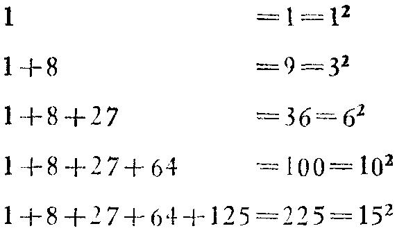

以及其他属于“分解与重新组合”的各种办法。
3I．归纳与数学归纳法
归纳法是通过对特例进行观察与综合以发现一般规律的过程。它用于所有
科学甚至数学。数学归纳法则仅在数学中用以证明菜类定理。从名称上看，二
者有联系，这点毋宁是不幸的，因为二者在逻辑方面的联系极少。不过二者之
间还有某种实际联系；我们常把两种方法一起使用。我们将用同一个例子来说
明这两种方法。
(1) 我们可能碰巧看到
1+8+27+64=10 2
于是，把各个数写成平方和立方，我们可以把上述事实写成更有趣的形式：
1 3 +2 3 +3 3 +4 3 =10 2
怎么会有这样的事发生?是否经常有这样的事，即连续自然数的立方和是一个自
然数的平方?
我们提的这个问题很象博物学家所提的。博物学家看到一个奇特的植物或
者稀有的地质层，会设想一个普遍的问题。我们的普遍问题是关于下列连续自
然数的立方和的：
1 3 +2 3 +3 3 +… +n 3
我们是由特例 n=4 引出这个问题的。
对于这个问题，我们能作什么呢?博物学家将怎么办?我们可以研究其他特
例。特例 n=2 ，3更简单，下一个特例是 n=5 。为了一致与完整，我们加上 n=1 的
情况。将所有情况排列整齐，就象一位地质学家把他某种矿的所有标本排列起
来一样，我们可得下表：
很难令人相信，所有连续自然数的立方和是某个自然数的平方，这一事实
仅仅是巧合而已。在类似的情况下，博物学家对于这个由观察特例所得到的一
般规律的正确性将很少怀疑；一般规律几乎总由归纳所证明。虽然数学家基小
上用同一方式思考，但他在表达时却有更多的保留。他会说，下列定理是由归
纳有力地提出的：
前n个自然数的立方和是一个自然数的平方。
(2)我们已被引导到猜测一个值得注意的、有些神秘的定律。为什么n个连
续自然数的立方和应该是一个自然数的平方?不过，显然，它们是某个自然数的